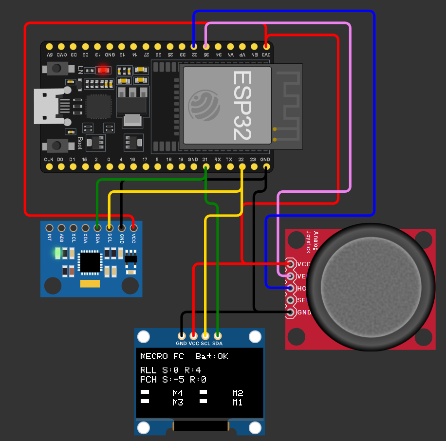
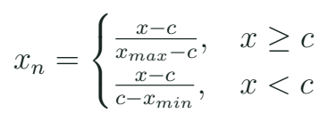
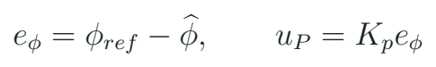

Mando y control de banco: interpretar el proyecto de vuelo
Transformar un joystick a una referencia normalizada y relacionarla con una medida y una acción proporcional declaradas.
Qué hace el proyecto y cómo lo vamos a usar
El proyecto 17 del laboratorio lee joystick e IMU, calcula una corrección proporcional y muestra números en serie. Es una buena oportunidad para conectar varias ideas del curso, siempre que su nombre y su alcance se expliquen con precisión. La edición docente lo presenta como “Mando e IMU: demostración proporcional de banco”. Las variables impresas como salidas no son una prueba de actuación sobre motores ni una validación de vuelo.

Primero se separan tres bloques. El mando humano produce una referencia. La medición y su procesamiento producen una estimación. La comparación genera un error con unidad. Después se decide qué acción ilustrativa mostrar o aplicar al banco preparado. Si se mezclan esos bloques en una sola lista de números llamada “controlador”, cuesta detectar si el error proviene del joystick, del sensor, de la escala o del signo.
La conexión con drones es conceptual y tangible a la vez: el alumno sostiene el mando y el módulo de sensores, observa sus cambios y explica cómo podría organizarse esa cadena en un sistema más completo. Mantener un propósito de banco permite ensayar hipótesis sin atribuir al ejercicio funciones que no se han desarrollado.
Centro, escala y zona muerta del joystick
Un joystick analógico no siempre entrega exactamente 2048 al soltarlo ni recorre de forma simétrica hasta ambos extremos. Se registran centro y extremos útiles de cada eje. La normalización transforma esos valores a una convención, por ejemplo de −1 a 1. Una zona muerta conserva cero ante pequeñas variaciones alrededor del centro. Su tamaño se justifica con el comportamiento observado, no con el deseo de ocultar un montaje inestable.

Datos para una calibración
| Dato | Qué significa | Qué registrar |
|---|---|---|
| Centro c | Reposo observado | Valor y dispersión |
| Extremos | Recorrido útil | Mínimo y máximo |
| Zona muerta | Cambio ignorado | Criterio y amplitud |
| Signo | Sentido de la referencia | Convención de ejes |
Centro desplazado
Un eje queda en 2150 y la escala fija espera 2048. ¿El mando de referencia será necesariamente cero?
Ver razonamiento del caso
No. La calibración o la zona muerta deben representar el centro real y su criterio. No se arregla cambiando el sensor de orientación, porque el origen de esta diferencia está en el mando.
Una referencia y una medida comparables
Para calcular un error angular, referencia y estimación deben compartir unidad y convención. El proyecto original usa una multiplicación de aceleración como aproximación angular. En el curso se sustituye por la estimación cuasiestática explicada en la clase 12 o por un caso numérico de referencia identificado. El alumno señala el punto donde una medida pasa a ser una estimación y qué hipótesis permite interpretarla.

Signo de la acción
La referencia del caso es 10° y la estimación es 6°. Con Kp = 2 unidades/°, ¿qué acción proporcional resulta?
Ver razonamiento del caso
El error es 4° y la acción resulta 8 unidades del mando definido. El signo físico que corrige la desviación depende de la interfaz y del montaje; se comprueba antes de cerrar un lazo real.
Un cambio de signo puede producir realimentación positiva si la acción agranda la desviación en lugar de reducirla. Por eso la primera comprobación del banco es pequeña y observable. Un nombre como “roll” no determina por sí solo qué dirección representa el eje. La convención queda dibujada o anotada junto a la pieza.
Ordenar el programa por bloques
Flujo de una iteración de banco
readCommand();
readSensor();
checkFreshness();
if (commandValid && sensorValid) {
error = reference - estimate;
correction = Kp * error;
} else {
correction = 0;
}
logBenchState();Este fragmento es un esquema de organización, no un controlador de vuelo compilable. La referencia concreta c13_mando implementa la normalización y la zona muerta y produce un registro de serie sin salidas de motor. El código c12_imu aporta la lectura y la estimación de banco. El equipo relaciona ambas entradas en su portafolio y conserva las condiciones de validez.
El orden del programa y su duración importan. delay(10) no demuestra un periodo exacto de 10 ms: también consumen tiempo las operaciones de adquisición y de registro. La afirmación del sitio sobre una frecuencia mínima universal que haría caer cualquier dron se retira del material docente. La respuesta de un sistema depende de dinámica, estimación, latencias, actuación y diseño del control, no de una única cifra de bucle.
Laboratorio: mover una cosa cada vez
- Ejecuta c13_mando y conserva un registro del centro de cada eje.
- Modifica un extremo de calibración y observa el efecto en la referencia.
- Comprueba la zona muerta con reposo y movimientos pequeños.
- Relaciona el eje de mando con la convención del módulo IMU.
- Resuelve el error y la corrección de tres casos de banco.
- Invalida una entrada por software y explica la salida prevista.
- Presenta un diagrama de bloques con unidades, tiempos y estados.
Caso de explicación
| Referencia | Estimación | Error |
|---|---|---|
| 10° | 6° | 4° |
| 0° | −3° | 3° |
| −5° | −5° | 0° |
Los casos numéricos permiten comprobar signos y unidades antes de integrar hardware. En la demostración docente se conserva una entrada y se mueve la otra para que el grupo identifique su efecto. Si ambas cambian simultáneamente, un principiante puede atribuir la corrección a la causa equivocada. Al terminar, el alumno debe poder señalar qué dato cambió y qué parte del programa lo utilizó.
Lo que demuestra el banco y qué amplía la formación
El banco demuestra adquisición, transformación y comparación bajo sus condiciones. Un sistema de vuelo añade muchas otras funciones y validaciones. Para una primera ruta MECRO, el valor está en construir una base comprensible que permita leer después documentación de control y aviónica con mejores preguntas. El alumno conserva su ejemplo como un instrumento de aprendizaje y diagnóstico, con un título que describa la función efectivamente implementada.
Identidad de cada resultado
| Resultado | Cómo se presenta |
|---|---|
| Referencia normalizada | Mando de banco |
| Ángulo de acelerómetro | Estimación cuasiestática |
| error × Kp | Acción proporcional |
| Valores de mezclador impresos | Ejercicio numérico |
Investiga por qué una estimación de orientación puede necesitar varias fuentes y cómo un mando humano puede representar ángulo, velocidad angular u otra variable según el modo del sistema. No hace falta implementar esas arquitecturas para reconocer que la palabra “mando” oculta una decisión de interfaz. Describe una de esas posibilidades y qué unidad cambiaría en el error.
Práctica guiada
- Mostrar joystick e IMU como dos entradas con funciones distintas.
- Calibrar centro y observar c13_mando.
- Resolver un error con unidad y signo declarados.
- Presentar el proyecto 17 con el alcance corregido de banco.
Preguntas de cierre
¿2048 es el centro garantizado de cualquier joystick?
No. Se observa y registra el centro del componente y su montaje.
¿delay(10) garantiza 100 Hz exactos?
No. La duración total incluye las demás operaciones y sus variaciones.
¿Qué necesita un error bien definido?
Referencia y estimación con unidades y convenciones comparables.
Entrega
Calibración de mando, tres casos resueltos y diagrama de bloques del banco.
Proyectos MECRO relacionados
- 17. Mando de Vuelo (Flight Controller) · Núcleo corregido. Mando y demostración P de banco Abrir referencia Wokwi
Fuentes para ampliar
[MECRO] MECRO. Laboratorio Electrónica con ESP32: veinte proyectos.
[ADC] Espressif Systems. Arduino-ESP32: ADC.
[IMU] Adafruit. MPU6050: biblioteca, cableado y lectura.
[TIME] Arduino. Referencia del lenguaje: millis.
[FBS] Åström y Murray. Feedback Systems: An Introduction for Scientists and Engineers; edición electrónica de los autores.